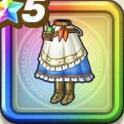

宿王リッカのエプロン
攻略班 9.5点 / 魅了耐性+5%ふきとばし耐性+5%魅了耐性+5%ふきとばし耐性+5%スキルの体技ダメージ+7%右隣のキャラクターのスキルの斬撃ダメージ+3%スキルHP回復効果+3%
くわしい特徴
【レベル別習得スキル】 Lv1魅了耐性+5% Lv8ふきとばし耐性+5% Lv10スキルの体技ダメージ+7% Lv12右隣のキャラクターのスキルの斬撃ダメージ+3% Lv15スキルHP回復効果+3% Lv20魅了耐性+5% Lv23すばやさ+6 Lv25ふきとばし耐性+5% 【限界突破スキル】 1凸攻撃力+12 2凸すばやさ+12 3凸守備力+12 4凸さいだいHP+12